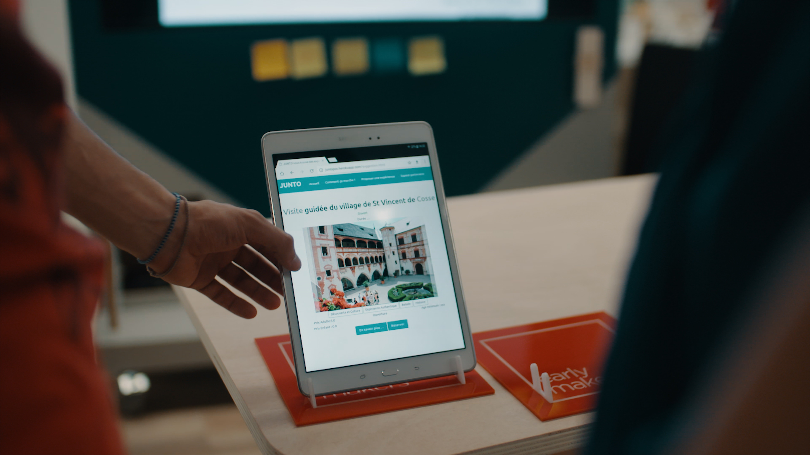
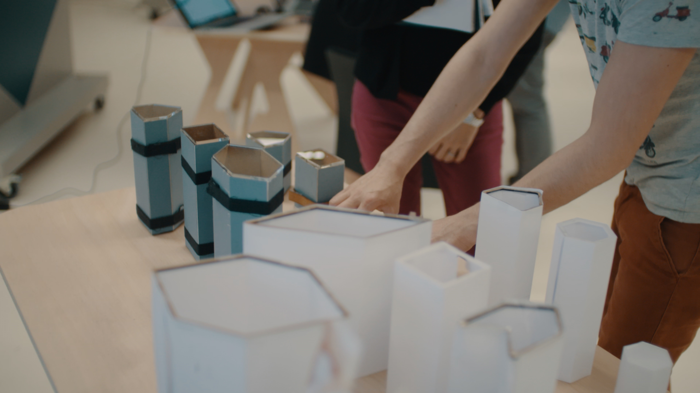
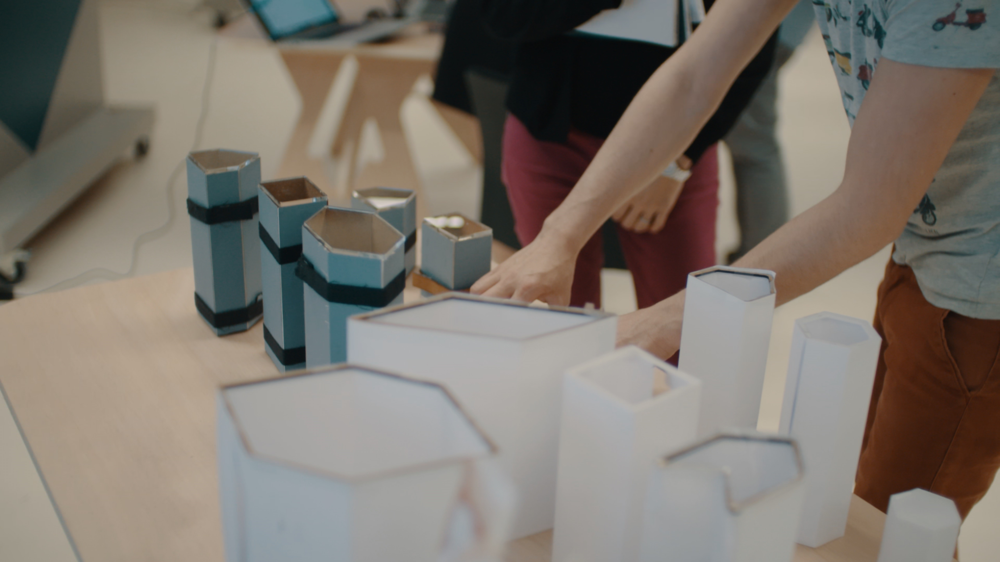

bootcamps
Bootcamps are 4-day workshops open to the entire emlyon community. Students, alumni, staffs, incubated, executives, etc. are welcome!Through an immersion in the makers' lab technology-based, participants learn to 3D print, code, laser cut, electronics and work together.
Each bootcamp allows participants to build a product emblematic of a tech that is part of a sustainable approach.
The number of participants being limited, we organize a selection only based on motivation. Register for next editions now !
Discover previous editions and remake easily with our documentation :
-
makers’ bootcamp « IoT »
Pour sa cinquième édition, le makers' bootcamp a exploré la thématique de l'agriculture urbaine et permis à 40 participants d'apprendre #arduino, la modélisation 3D et #HTML #CSS #JS pour fabriquer 10 potagers connectés!
-
makers’ bootcamp « 3d printing »
Pour sa cinquième édition, le makers' bootcamp a exploré la thématique de l'agriculture urbaine et permis à 40 participants d'apprendre #arduino, la modélisation 3D et #HTML #CSS #JS pour fabriquer 10 potagers connectés!
-
makers’ bootcamp « creative coding »
Pour sa cinquième édition, le makers' bootcamp a exploré la thématique de l'agriculture urbaine et permis à 40 participants d'apprendre #arduino, la modélisation 3D et #HTML #CSS #JS pour fabriquer 10 potagers connectés!
-
makers’ bootcamp « robotics »
Pour sa cinquième édition, le makers' bootcamp a exploré la thématique de l'agriculture urbaine et permis à 40 participants d'apprendre #arduino, la modélisation 3D et #HTML #CSS #JS pour fabriquer 10 potagers connectés!

boosters
Booster are 4-day workshops based on a call for projects. Students, alumni, staffs, incubated, executives, etc. are welcome!Get dedicated expertises to help your team to learn agility and develop your prototype. test your prototype with prospects on the last day to get feedbacks.
You have an entrepreneurship project ? Make it real !
Don't miss the next call for projects, Register now !
Discover previous editions and participants story :
-
Junto
A virtual guide, available 24 hours a day, capable of making personalized suggestions for tourist activities.

-
Lilismart
IoT solutions to help people with loss of autonomy using connected objects and artificial intelligence.


-
Betleague
A sports betting platform between individuals. Finished the odds, our application allows to create or join a league and to challenge the people of your choice, the winner is the one who will have the most winning predictions.

-
makers bot
A chatbot for students to effectively answer their questions about school life, associative life or even administrative issues.


-
The milk man
The milk man offers eco-friendly packaging to promote the purchase of bulk zero waste.
 


after works
After works are 2.5 hours workshops made by an expert on a subject with a concrete usage!Learn how to make your logo, a web site or how to design objects or electronics.
Don't miss our next after works and come to learn with your friends, Register now !